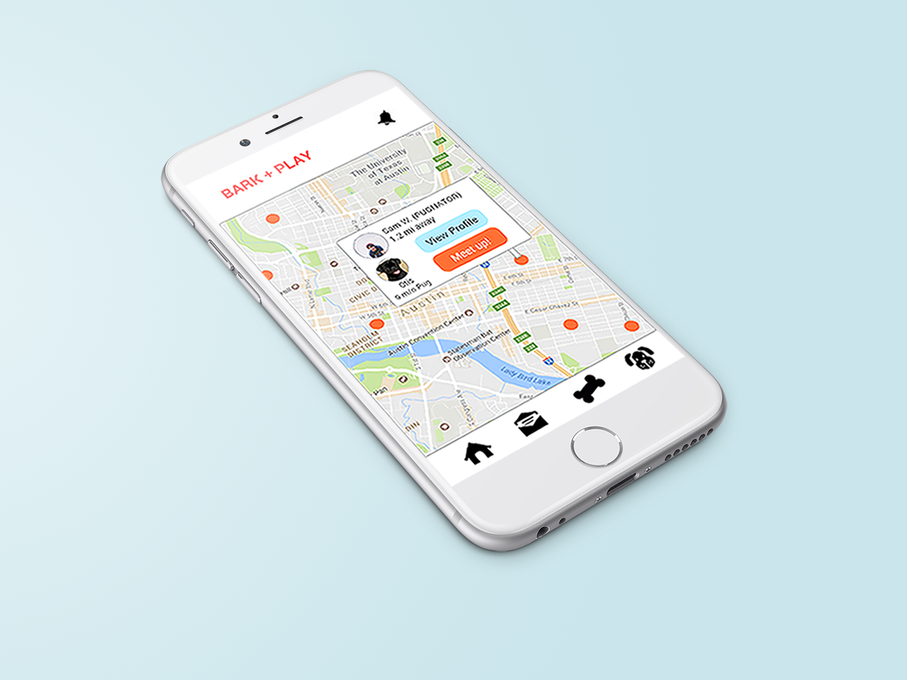

Bark+Play: Encouraging Dog Socialization & Community Building
UX/UI Design — Mobile
UX/UI Design — Mobile
Bark+Play is an app that helps owners socialize their dogs by finding play dates for them. In the process of finding and interacting with others to set up play dates, the app encourages people to build stronger interpersonal relationships with others in their community. This personal project was inspired by my experiences.
Because this was a personal project, I carried out all of the tasks. As a UX Designer, I investigated the problem, understood my users, did a competitive analysis, developed personas, brainstormed potential solutions, mapped the task flow, developed a brand, and created the mockups.
As a dog owner myself, I understand the challenge in being responsible for socializing a dog. A lack of socialization may lead them to behave aggressively at the sight of other dogs. Like us, dogs learn through experience and allowing them to experience the world is the best way to teach them how to behave properly. So how can we help dogs who don't socialize often learn how to behave well with others?
Owners tend to tug on their dog's leash to keep them walking rather than stopping to socialize
How might we... encourage owners to let their dogs interact with others?
How might we... create/facilitate time for owners to let their dogs interact with other dogs?
How might we... assist owners to form connections with other owners within a neighborhood?
I realized from my interviews that the socialization issue wasn’t just something that dogs had to improve on, but also us as members of a community. In relying on our phones to connect to our world — our banks, our coworkers, our loved ones — we become detached from the physical community in which we live. I understand why it’s hard for everyone to disconnect — I empathize because I also struggle — but our phone doesn’t have to be a problem. It can instead be the medium for solving the socialization issue present in our community and subsequently, our dogs.
I brainstormed possible ways to help people form connections within their community with the goal of also helping dogs socialize. I didn't limit myself and wrote whatever came to mind.
My ideas? A page on the city's website that lets owners post meet-ups, asking shelters to organize events for dog owners, building dog areas within city parks to encourage owners to frequent the city's parks... I wanted solutions that didn't impinge on owner's choice to participate.
Then, I thought, why not just create an app? I did some research and found that there were two apps out there, but based on their reviews they weren't doing well. So, I thought, what are they doing wrong?
I designed a map of a system of actions for a task flow that encompasses the entire experience for a user.
Since I now had a better understanding of the experience and of my potential users, I proceeded to create a storyboard to help frame the context of when someone would use the app.

I created a style tile to develop the brand for my app. I chose colors that conveyed the feelings of fun, warmth, and joy which comes when meeting other people and their dogs.
I sketched a series of screens that capture a user's experiences before, during, and after meeting up with another owner.
I designed the final screens using the color palette and elements from my style tile. I tried to keep my designs as minimal and intuitive as possible in order to emphasize the experience that happens beyond the screen.

The app uses the phone's GPS feature to determine where a user is and to share that with nearby dog owners. Safety is a priority, so this feature is only in effect if a user gives permission — it can be changed in the app's settings so that it doesn't use GPS at all or so that it only uses it when the app has been opened. If GPS isn't used, then only the user's city is displayed on the list of nearby dogs.

Sometimes a user may want to ask more questions about someone's dog before scheduling a play date, or perhaps a user may want to suggest a meet up location. Maybe they just want to share pictures from their last play date. For many reasons, a private messaging feature allows users to get in touch and keep in touch.

We've all grown accustomed to having our own profiles online for the purpose of sharing our basic information with friends/followers. Bark + Play's profiles help users learn about each other and about their dogs. By giving users a profile, they will feel more comfortable with requesting a play date because they will have learned a little bit more about the person/dog they will be meeting with.

If the map view of nearby dogs isn't helpful — as in, perhaps no one in the area is using GPS to show where they are — then users may look through a list of dogs living in the city. If users have their GPS enabled within the app, then the list will display the distance between them and another dog. Of course, the other user must also have their GPS enabled in order for the distance to display. Aside from this list, users may also view their friends list and request to meet up with one of them.

Building a network within a community is something that Bark + Play also aims to achieve. If play dates are successful, then users are encouraged to add someone to their friends list. By adding this feature, I hope to encourage users to form connections with people in their neighborhood and push them to start conversations beyond the screen. Subsequently, through these new formed friendships, the user's dogs will have regular play dates and new friends, which translates to good social skills.
Through this project, I learned how to understand users through empathy and through creating a product that facilitates behavioral change and delivers value to its users. I also practiced weaving digital and physical experiences into a product that emphasizes building interpersonal relationships in a real life setting. Bark + Play's purpose is to encourage users to meet members of their community and share their love for dogs while helping their dogs learn to socialize through play dates. I would hope that these interactions would generate awareness of diversity and connection within a neighborhood.
I'm always looking to improve as a designer and a big part of this process is learning what my strengths and weaknesses are. I'm not a visual designer, but this project helped me pick up on some skills related to that by testing my interaction design abilities. My next steps would be to build a prototype out of my mockups and then test it with users. I would iterate on my designs for as much as I need to until I learn that my users are satisfied with what I've delivered.